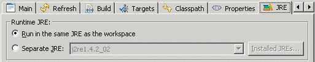

Ant EnhancementsCodePro adds several new Ant task types which are utilized by the CodePro ExportSet wizard, but can also be used individually in any Ant script. Only some of these new task types can be run in an Eclipse headless Ant environment, while others require UI components and thus cannot.
In addition, CodePro adds several Ant task types that are specific to WebSphere Studio Application Developer. These tasks are available in Application Developer 5.0 and 5.1, but not needed in Rational Application Developer 6.x because it provides equivalent Ant tasks:
The old task names generate a warning when used, but otherwise operate identically with one exception. The "codepro.exportSet" task does not work under Eclipse 2.0 and Application Developer 5.0 and must be converted to the "ant" Ant task. More details... More information about Ant can be found at http://ant.apache.org/ Eclipse 3.0 UsageUnder Eclipse 2.1 and earlier, Ant tasks are run in the same JRE as the IDE and can make use of Eclipse libraries. Under Eclipse 3.0, Ant tasks are normally run in a separate JRE and don't have access to Eclipse libraries. All of the CodePro Ant tasks require access to various Eclipse libraries, and therefore cannot run in a separate JRE. In order to use the CodePro Ant tasks within Eclipse, you need to select the Run in the same JRE as the workspace option from the JRE page of the Run Ant dialog.  |